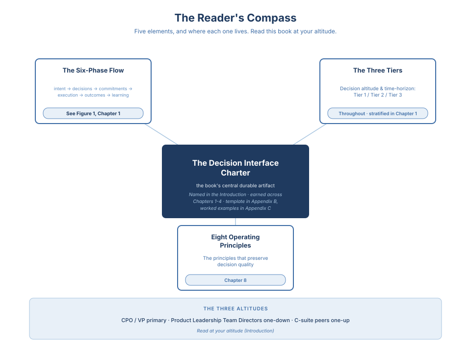

Vision to Value · 2 / 16
Introduction
Ideas are abundant. Talent is abundant. Tools are more powerful than they have ever been. Yet most product organizations still cannot consistently turn intent into outcomes.
The gap is rarely creativity. It is rarely execution speed. It is leadership: how decisions are made, how ownership is designed, and how strategy is carried through the organization over time. Turning vision into value is the defining challenge of modern product leadership, and it is the challenge this book is built to close.
Rather than a new methodology or a universal framework, this book presents a blueprint for product organizations: a set of principles, decision models, and structural defaults that help leaders convert strategy into sustained value.
At the center of that blueprint sits a single artifact: the Decision Interface Charter, the agreement that defines how a given decision is owned, made, and carried over time. The reader earns it across the first four chapters, not as a template to fill in but as a discipline to install; Appendix C provides the kit for putting it in place. Everything that follows is built outward from it.
Why This Book Matters for Product Leaders
Great products are the output of well-designed organizations. Behind every product that compounds value over time is a product organization with explicit decision ownership, strong cross-functional alignment, and the discipline to balance strategy with execution under real-world pressure. When that system works, organizations learn faster than their competitors; when it doesn't, even the best ideas stall, trapped by misalignment, unclear accountability, and constant resets.
Throughout my career, I have seen this pattern repeat across company sizes and contexts. The difference was never talent; it was how leadership decisions were translated into structures, incentives, and day-to-day behavior. Vision to Value is written for leaders who recognize that scaling product success requires more than better roadmaps or faster delivery; it requires an operating model that holds under pressure.
Most product books operate at the team level. They teach how to discover problems worth solving, how to prioritize the work, how to ship. That craft is real, and the books that teach it well - Inspired, Continuous Discovery Habits, Escaping the Build Trap - belong on the shelf of every product leader. Vision to Value operates one level up. It is about the organizational conditions that make team-level craft actually produce outcomes at scale: who owns which decision, where decisions get made, how commitments hold firm without going rigid, and what learning looks like when the answer matters to the board, not just the backlog. If you have read the team-level canon and your organization still cannot consistently turn intent into outcomes, that is the gap this book is written to close.
Product Leadership as a Decision System
This book treats product leadership as a decision system. Not a collection of best practices, and not a methodology to implement wholesale - but a way of making coherent decisions under uncertainty, across strategy, execution, and scale.
The goal is not to standardize how teams work. It is to make high-quality leadership judgment repeatable and durable - beyond individual heroes, and resilient under pressure.
Product leadership becomes scalable when the organization can reliably move from intent → decisions → commitments → execution → outcomes → learning. This model is the backbone of the book. Each chapter strengthens one part of it, and the system only holds when all parts reinforce each other.
This book decomposes the Product Organization's custodianship of the decision system three ways, and the three are orthogonal on purpose. The decision loop above, intent → decisions → commitments → execution → outcomes → learning, is the pipeline: what flows through the system. The eight operating principles (named at the close of Chapter 1, revisited together in Chapter 8) are the invariants: what must hold true at every stage. The three-phase strategic process in Chapter 2, formulation, elaboration, execution, is the meta-process: how the pipeline is designed and adjusted over time. Each chapter works primarily in one axis. Readers who feel the book is repeating itself are usually reading the same decision from two different axes; readers who feel something is missing are usually looking at the third axis that hasn't been introduced yet.
Vision becomes value through a repeatable decision system, not through isolated execution. Strategic intent is translated into decisions, hardened into commitments, carried through execution, measured as outcomes, and fed back through learning. Operating principles preserve decision quality under pressure, while organizational structure reinforces decisions over time-so value compounds instead of eroding at scale.
Two terms this loop rests on. A commitment is a decision hardened through sequencing, funding, external promise, or organizational dependency, such that changing it requires a conscious re-decision, not quiet drift. A roadmap item that triggered hiring is a commitment; a slide in a deck is not. Decision latency is the elapsed time between the moment a decision becomes necessary and the moment it is made and acted upon. The goal is not speed; it is the absence of unearned delay.
Example (one loop in motion): Intent: Increase mid-market activation by removing onboarding friction. Decision: Launch "Project Orion" to GA on March 31 only if CS readiness and pricing pages meet agreed thresholds; otherwise slip two weeks. Commitments: Product owns activation lift; PMM owns positioning, pricing, segment definition, and sales enablement readiness; CS owns playbook and training; Eng owns quality bar and rollout plan. Execution: Build behind a flag, train, ship to a 10% cohort, then expand. Outcomes: Activation rises 4% (target was 12%); tickets spike; churn risk appears in Segment B. Learning: Messaging over-promised, not setup friction. Next decision: simplify value prop and revise packaging before expanding.
Throughout this book, product leadership effectiveness is defined by three organizational capabilities, the evaluation lens every chapter returns to:
- Decision quality - making the right calls given available information and constraints.
- Decision repeatability - enabling those decisions to be made consistently beyond individual leaders.
- Decision durability - ensuring decisions survive time, scale, and organizational pressure.
Vision turns into value only when all three are present. Quality without repeatability is fragile. Repeatability without durability collapses under scale. Durability without quality preserves mistakes.
One unit recurs at every layer: the strategic bet. Bets are what the decision system is built to decide on, commit to, execute against, and learn from. When the book refers to portfolio tradeoffs, commitment hardening, or outcome reviews, the unit being traded, hardened, or reviewed is a bet. The full definition lives in Chapter 2, where Formulation does the work of choosing the right ones. When the system works, organizations stop relying on heroics and start compounding judgment.
A Note on AI
Advances in AI have dramatically reduced the cost and time required to build software, and they continue to change the everyday work of a product organization. The discipline this book defines is technology-agnostic on purpose: it is about how decisions are owned, framed, committed to, and revisited, and that work is the same whether the drafts arriving at the seat were written by a junior PM or by an agent. Faster execution raises the cost of poor direction; the response to that is a stronger decision system, not a different one. The deeper implications for organizations that include AI workers alongside human workers, and for the architectural choices that come with that, are addressed in companion treatments outside the scope of this volume.
Leadership Challenges Change with Scale
The leadership challenges in this book shift as organizations grow. What works at early execution breaks down as coordination costs rise, markets mature, and strategic stakes increase. Later chapters show how the same principles apply differently across three altitudes: enabling basic delivery, leading at the company level, and shaping markets.
Product leadership maturity is not an internal self-assessment. It is what the CEO observes from outside the product organization. At the Enabling stage, product delivers on time but the CEO cannot connect shipped work to business outcomes. At the Company Leading stage, the CEO sees decisions land coherently across product, go-to-market, and outcomes - without having to force the coherence. At the Market Leading stage, the product organization changes what the CEO believes is possible. The principles in this book remain constant, but how they are applied must change with scale.
Who This Book Is For
This book is written for one seat and stays useful at a measured distance on either side of it. Find your tier below by where you sit relative to that seat. Each tier tells you what the book gives a reader in your position, and how to read it.
Primary readers: the Chief Product Officer and the VP of Product. This is the seat the book is written from and the seat it is written for. The daily work of this seat is the architecture of the company's decision system: who owns which decision, where it gets made, how a commitment holds without going rigid, and what the organization learns when the answer matters to the board. Every chapter is pitched at this altitude. The reader in this seat is the one the book addresses directly. The seat is defined by the work, not the title: a Head of Product at a company with no C-level product seat, or a Director designing the system from below, sits here too. The book assumes agency and treats earning it as part of the work.
One altitude down: the seven Product Leadership Team (PLT) Directors. Product Management, Product Marketing, Business Development, Competitive Intelligence, Business Operations, Product Operations, and Value Realization are the seven craft layers that run the decision system day to day. Among them, Business Development and Product Marketing sit at Formulation altitude alongside Product Management: their decisions shape the architecture of a bet before scope commits. The other four Directors own decisions that land at later phases of the flow. For all seven, this is the manual for the seat above theirs. It reads as an invitation, not a demotion: it names the altitude their own decisions feed into, and the one most Directors move into next.
One altitude up: the C-suite peers. The CEO, CTO, CRO, CFO, CMO, COO, and CHRO each meet the product organization at one specific interface. For this reader, the book reads as a map of the seat across the table. Chapter 7, The Executive Altitude, addresses these peers directly, as the counterparties the product organization is built to work with, not as readers learning to run a product organization themselves. Read your own interface there; read the rest as context for what the seat across from you is accountable for.
Read with patience: senior product professionals across the seven craft layers, on a Director track. The book sits one altitude above this reader's current seat. It reads best as the shape of where the work is heading, not as the kit for where it stands today. The day-to-day craft of the current seat is named and respected here, but it is not the subject. The tiers reward a return visit as a reader's own altitude rises.
Not this book
Three readers are better served elsewhere. Name yourself honestly and go where the value is.
If you are in your first years at the Individual Contributor level in any product craft, product management, product marketing, competitive intelligence, or any of the seven layers, and the work in front of you is team-level craft, discovery, prioritization, shipping, building the daily skill of your seat, start with the literature for that craft first. For product managers, that is the Inspired genre and Lenny Rachitsky's writing. Each craft layer has its own foundational canon. This book assumes you already practice the craft and is pitched at the seat that designs the system your craft runs inside.
If you lead engineering, the seat you are building lives in the engineering-leadership category that Empowered and Accelerate anchor. Come here once you are designing the product organization's side of the interface, not running engineering's, and read those two first.
If you are founding a company earlier than Series C, the full architecture is more than your stage needs. Start with Appendix A, the Sub-Series-C Install Path: the install moves shaped to your stage, the practices to defer, and the path into Series C and beyond.
How to Use This Book
This is not a book you need to read cover to cover in one sitting.
If you are an experienced product leader, use this book to codify how you lead: align your leadership team around shared principles, clarify decision boundaries across functions, and scale judgment beyond the people who currently hold it.
You can read it end-to-end to follow the progression from vision to execution, or engage selectively, focusing on the sections most relevant to your current challenges.
- Stepping into a senior product leadership role: start with Chapters 1 and 2.
- Scaling a product organization: focus on Chapters 3 through 6.
- Navigating cross-functional tension: pay particular attention to the decision and go-to-market alignment sections across those chapters.
- Running a decision system you do not fully own (accountability without authority): Chapter 1's "Designing the System When You Don't Own the Org Chart" is written directly for you.
Each chapter concludes with a Vision to Value Toolkit of prompts for leadership conversations, offsites, and ongoing organizational decisions. Use the chapter map below to jump directly to the part of the decision system that's failing in your organization. The book is a reference you return to over time: not a methodology to implement wholesale, but a lens for making better decisions as your organization evolves.
How This Book Is Structured
This book is organized around one idea: turning vision into value is a decision system, not a methodology or a set of isolated practices. Each chapter strengthens a specific part of that system, so you can diagnose where your org is breaking and apply the smallest design move that restores decision quality.
A map of the journey: Chapter 1: End-to-end Product Organizations - defines what "end-to-end" actually means, why fragmented ownership breaks the value loop, and names the eight operating principles that run through the rest of the book. Chapter 2: The Strategic Process and Operational Focus Areas - shows how strategy becomes commitments and execution, and where decision flows commonly collapse. Chapter 3: Structure and Scope - names the roster of a scaled product organization: who sits where, at what altitude, with accountability for which decisions, and what fails when seats are missing or ambiguous. Chapter 4: Decision Interfaces and the Architecture - introduces the Decision Interface Charter and shows how decisions move through the seats the roster names, using a single altitude-agnostic template that runs identically for Directors, VPs, and CPOs. Chapter 5: Scaling as Design Problem - treats scale as a design problem rather than a capacity one: how leadership shifts from doing the work to designing the system that does it, the three structural moves that hold scale, the Product Leadership Team as the scaling engine, the interfaces that break first, the Role Map of function seats, and the five signals that make the decision system observable. Chapter 6: People at Scale - applies the design thesis to the talent architecture: the talent ladder as the decision system expressed in people, leveling as decision-rights design, the CPO-Chief People Officer interface that governs ratios, comp-band integrity, and hiring discipline, and the quarterly calibration forum as the surface where talent design either holds or quietly drifts. Chapter 7: The Executive Altitude - extends the same Charter discipline outward to the nine interfaces that define CPO tenure: CEO, CTO, CRO, CFO, Board, COO, CMO, Chief People Officer, and General Counsel. Chapter 8: The Eight Operating Principles - revisits the eight principles named in Chapter 1, now in light of the decision system the preceding chapters have built.
Each chapter ends with a Vision to Value Toolkit for staff meetings, planning, offsites, or resets.
One pattern recurs at every scale:
Vision without structure dissolves into aspiration. Structure without decisions hardens into bureaucracy. Decisions without learning become habits that outlive their purpose.
The book returns to this triad at the end. Between here and there, every chapter argues for the structure, the decisions, and the learning that keep those three forces held together.
What "World-Class" Means Here
"World-class" carries weight in this book and deserves a single framing. The phrase names organizations that design decisions as infrastructure, hold end-to-end ownership as a peer contract, treat sensors as gates rather than commentary, install go-to-market as a pre-commitment choice, and carry sustained portfolio-outcome evidence in the market over multi-year windows. The rest of this book earns the claim, chapter by chapter. The standard is restated where it bears on the argument; the term is not redefined elsewhere.
The Three Tiers
A product organization that scales without drifting carries three architectural tiers, and the rest of the book assumes the reader can move between them without friction. Naming them once, here, is the primer.
Tier 1 is the vision tier. Multi-year strategic direction, portfolio shape, category bets, and the commitments the organization makes to outcomes it will be measured on in two, three, or five years. Tier 1 is where the CPO, the VP Product, and the board meet; it is where the Board Bet Review Charter lives; it is where the decisions whose consequences the company cannot reverse within a planning cycle get made.
Tier 2 is the product tier. One-to-two-year product-line direction, feature-level roadmap commitments, customer-evidence-driven scope decisions, and the interfaces between Product and the functional peers (Chief People Officer, CMO, CTO, CRO, CFO, GC, COO). Tier 2 is where the Director of Product Management, the PM-Directors, and the Director of Product Marketing meet; it is where the Decision Interface Charter runs; it is where Product most often breaks under scale, because Tier 2 is the altitude where elaboration absorption happens.
Tier 3 is the execution tier. Quarterly delivery, sprint-level scope decisions, customer-feedback loops tight to the release cadence, and the cross-functional coordination that ships work. Tier 3 is where PMs, engineers, designers, and PMMs work every day; it is where the work actually ships; it is the tier where strong execution compensates for Tier 2 weakness just long enough for the organization to stop noticing that Tier 2 is weak.
The three tiers are not a hierarchy of importance but of altitude and time-horizon. A decision made at the wrong tier is a decision in the wrong room. The failure modes that recur in the rest of this book are almost all tier-mismatch failures: Tier 3 execution compensating for Tier 2 drift; Tier 2 absorbing Tier 1 elaboration; Tier 1 reaching down into Tier 3 and starving Tier 2 of air.
A roadmap commitment to ship an integration in two quarters is Tier 2 work. The strategic bet that enterprise buyers in a named segment are worth a multi-year portfolio commitment is Tier 1 work. The daily decision about which engineer pairs with which designer on which Tuesday is Tier 3 work. When the CEO asks about the engineer-designer pairing in a board meeting, Tier 3 has reached Tier 1; the CPO's job is to route the question back to Tier 3 without the board losing confidence that it has an owner. Chapter 7 works this out in detail.


The Reader's Compass
The Decision Interface Charter. This is the one instrument the whole book is building toward. Every recurring decision your organization keeps re-litigating gets run through it. Read the rest of the book as the case for installing exactly one, then flip to Appendix B for the template when you are ready to write your own; the worked examples are in Appendix C.
Named in the Introduction · earned across Chapters 1-4 · template in Appendix B, worked examples in Appendix C
The Six-Phase Flow. This is the shape of how intent becomes value across the organization. See Figure 1 in Chapter 1 for the full picture, and return to it whenever you need to locate where a given piece of work sits in the flow.
See Figure 1, Chapter 1
The Three Tiers. Before you act on any decision, find its altitude: Tier 1 sets portfolio direction, Tier 2 shapes the product, Tier 3 runs execution. A decision worked at the wrong tier is a decision in the wrong room, so check the tier first.
Throughout · stratified in Chapter 1
The Eight Operating Principles. These are what keep decision quality intact as the organization grows past the point where any one leader can hold it. When you reach Chapter 8, read them as the standing checks you install once and apply to every decision after.
Chapter 8
The Three Altitudes. Before any of the four above, set your altitude, because it conditions how all of them read. If you sit in the CPO or VP seat, the book speaks to you directly. Product Leadership Team Directors read one level up from their seat; C-suite peers read one level down into yours. Fix your altitude before Chapter 1 so every instrument above lands at the right level.
Read at your altitude (Introduction)